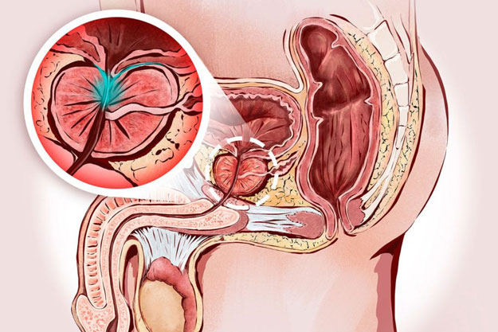

Πώς να θεραπεύσετε την προστατίτιδα;
Η συντακτική μας ομάδα δέχεται καθημερινά χιλιάδες μηνύματα, αλλά ένα από αυτά τράβηξε την προσοχή μας. Πιστεύουμε ότι θα είναι χρήσιμο για τους άνδρες που διαβάζουν το περιοδικό μας.

Θα ήθελα να μοιραστώ την ιστορία μου και ενδεχομένως να βοηθήσω άλλους άντρες που πάσχουν από προστατίτιδα και θέλουν να ανακτήσουν την υγεία τους. Για ευνόητους λόγους, θέλω να διατηρήσω την ανωνυμία μου.
Πρώτα απ’ όλα, τι είναι η προστατίτιδα; Με απλά λόγια, είναι μια φλεγμονή του προστάτη. Αυτού που παράγει το έκκριμα που επιτρέπει στα σπερματοζωάριά σας να «ταξιδεύουν» προς στον στόχο τους και να μην πεθάνουν στα πρώιμα στάδια της έτσι κι αλλιώς σύντομης ζωής τους. Κατά τη σεξουαλική επαφή, ο προστάτης φράζει την ουροποιητική οδό, εμποδίζοντας το σπέρμα να εισέλθει στην ουροδόχο κύστη και το αντίστροφο. Υπάρχουν πολλές αιτίες προστατίτιδας, αλλά οι κύριες είναι ο καθιστικός τρόπος ζωής και το αλκοόλ.
Η ιστορία μου ξεκίνησε πολύ πριν μάθω τι είναι η προστατίτιδα. Πάντα φαινόταν ότι αυτή η λέξη ήταν γνωστή μόνο στους συνταξιούχους και δεν μπορούσε με τίποτα να αναφέρεται σε μένα. Από ηλικία 15 ετών περίπου άρχισα περιοδικά να νιώθω έναν πολύ περίεργο διαξιφιστικό πόνο. Τότε δεν μπορούσα καν να εξηγήσω σε ποιο μέρος. Συνέβαινε πολύ σπάνια και δεν του έδινα καμία σημασία. Ποτέ δεν ξέρεις τι μπορεί να είναι. Ήταν ένα σπάνιο φαινόμενο και δεν μου ήταν καθόλου δύσκολο να το αντέξω 5-10 λεπτά.
Έχουν περάσει 10 χρόνια. Σε αυτά τα χρόνια, δεν με ενοχλούσε σχεδόν τίποτα. Λοιπόν, αυτός ο πόνος εκδηλωνόταν μία φορά κάθε 2-3 μήνες, μερικές φορές λιγότερο συχνά. Και για κάποιο λόγο μου κόλλησε η ιδέα ότι αυτό πιθανότατα συμβαίνει σε όλους. Απλά ήταν κάτι για το οποίο δεν μιλάει κανείς. Το πιο οδυνηρό ήταν όταν εμφανιζόταν μετά το σεξ. Δεν ήταν και η πιο κατάλληλη στιγμή να σωριαστείς από τον πόνο και να έχεις κρύο ιδρώτα.

Όταν πια έγινα 25 χρονών, άρχισα να νιώθω ένα πόνο στη βουβωνική χώρα που με έσφιγγε. Μια εβδομάδα αργότερα έγινε τόσο έντονος που το πόδι μου άρχισε να μουδιάζει στο εσωτερικό μέρος μέχρι το γόνατο. Το πρώτο πράγμα που ήρθε στο μυαλό μου ήταν πως έχω κήλη. Εκτός αυτού, είχα υποβληθεί σε τέσσερεις χειρουργικές επεμβάσεις, τρεις εκ των οποίων ήταν στη βουβωνική χώρα. Οι αισθήσεις ήταν παρόμοιες και άρχισα να προετοιμάζομαι ψυχολογικά για την εγχείρηση. Έχοντας κάνει τέτοιες υποθέσεις, επισκέφτηκα τον χειρουργό, ο οποίος εξέτασε τη βουβωνική χώρα, διέψευσε τις εικασίες που είχα κάνει και με έστειλε στον ουρολόγο.
Η εξέταση εκεί ήταν οδυνηρή. Ο γιατρός με έβαλε σε μια όχι πολύ ευχάριστη στάση και έβαλε το δάχτυλό του (ένιωσα σαν να είχε βάλει ολόκληρο το χέρι) σε ένα μέρος απαραβίαστο για οποιονδήποτε άνδρα. Θα σας πω το εξής: αν σας ζητήσει κάποιος να χαλαρώσετε σε μια τέτοια στάση, μην το προσπαθήσετε καν. Έτσι πέρασα περίπου ένα λεπτό. Φυσικά, είναι δύσκολο να συγκεντρωθεί κανείς, αλλά έπρεπε ακόμη να του απαντήσω πότε εντεινόταν ο πόνος. Και εντεινόταν τη στιγμή που μου πίεζε τον προστάτη.
Μετά την ολοκλήρωση των εξετάσεων, ο γιατρός μου πρότεινε να τον ακολουθήσω στο γραφείο του, κάνοντας ταυτόχρονα αστεία σχετικά με την υπέρψυξη. Δεν πρόλαβα να κάτσω, και ο καλός άνθρωπος μετατράπηκε σε εισαγγελέα. Μου μίλησε με τα πιο σκληρά και ταπεινωτικά λόγια, λέγοντας πως υποφέρω από ασθένεια σαρανταπεντάχρονων και πενηντάχρονων. Ακολούθησε σιγή την οποία διέκοψε η ερώτησή μου"ΤΙ ΝΑ ΚΑΝΩ;" Σιγά σιγά ο ουρολόγος άρχισε να μιλάει πιο αργά και να μου εξηγεί το τι μου συμβαίνει. Μου συνταγογράφησε υπόθετα, χάπια και μου είπε να κάνω εξετάσεις.
Η αγωγή βοήθησε. Παρεμπιπτόντως, με τη συμβουλή του ίδιου γιατρού, άρχισα να αθλούμαι (λένε πως αποτρέπει την παθολογική στασιμότητα στον προστάτη). Και μια μέρα μετά την πισίνα ένιωσα μια γνώριμη αίσθηση καψίματος. Πήγα σε άλλο γιατρό. Και πάλι τα ίδια. Εξετάσεις και ίδιες συμβουλές. Βοήθησε για λίγο, αλλά το πρόβλημα επανήλθε ξανά.

Όπως κατάλαβα, αυτή είναι μια φυσιολογική πρακτική των ουρολόγων το να μην θεραπεύουν την αρρώστια, αλλά να ανακουφίζουν προσωρινά τα συμπτώματα. Έτσι αποφάσισα να δράσω ο ίδιος. Έψαξα ολόκληρο το ίντερνετ, διάβασα ένα σωρό σχόλια για διάφορους γιατρούς. Σε ένα από τα φόρουμ, βρήκα ένα νήμα για έναν καθηγητή που θεραπεύει την προστατίτιδα μια για πάντα. Είναι αλήθεια ότι η γνωμάτευσή του κοστίζει πάρα πολύ.
Αλλά τι να έκανα; Έκλεισα ραντεβού, περίμενα τη σειρά μου για ενάμιση μήνα. Ήρθα στον καθηγητή έχοντας κάνει ένα σωρό εξετάσεις. Σχεδόν χωρίς να κοιτάξει τα αποτελέσματα, έβγαλε ένα πακέτο χάπια από ένα κουτί, μου τα έδωσε και με έστειλε να πληρώσω το ραντεβού.
Το φάρμακο ονομαζόταν . Έκανα ολόκληρη την αγωγή. Το αποτέλεσμα ήταν εντυπωσιακό: όχι μόνο έφυγε ο πόνος και η γενική δυσφορία, αλλά και η στύση βελτιώθηκε σημαντικά, έγινε καλύτερη και στο κρεβάτι άντεχα περισσότερο.

Το καλύτερο είναι ότι έχει περάσει ενάμισης χρόνος από τότε που ολοκλήρωσα την αγωγή με το και η ασθένεια δεν έχει ξαναεμφανιστεί.
Πρόσφατα αποφάσισα να πιώ προληπτικά το και να αυξήσω τη σεξουαλική μου ικανότατη. Μπήκα στο ίντερνετ για να μάθω αν το φάρμακο αυτό κάνει και για τέτοιους σκοπούς. Όπως αποδείχθηκε, κάνει.
Ανακάλυψα επίσης ένα άλλο ενδιαφέρον στοιχείο. Στην πραγματικότητα, το κοστίζει αρκετά λιγότερο από ό,τι στην κλινική του καθηγητή. Το φάρμακο μπορεί να το παραγγείλει κανείς απευθείας από τον παραγωγό χωρίς επιπλέον χρεώσεις. Και ο καθηγητής αποδείχθηκε απατεώνας. Για αυτό, θέλω να μοιραστώ ένα λινκ όπου μπορείτε να παραγγείλετε το στην τιμή που το πουλάει ο παραγωγός: